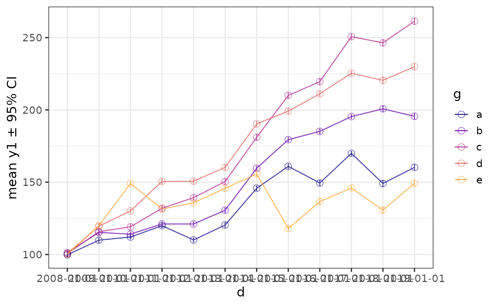
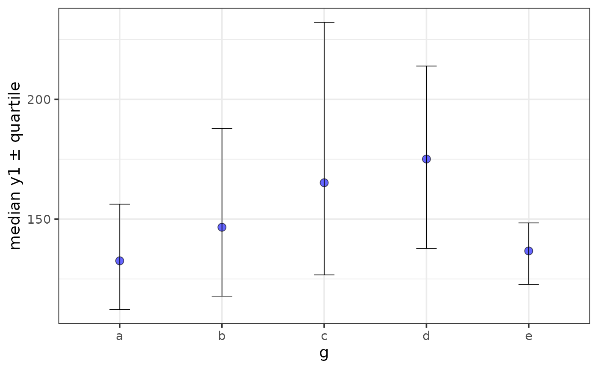

Easily generate plots of a sample mean or median +/- error bars using ggplot2 with a simplified customization interface with static (ggplot) and interactive (plotly) output options. The static output is useful for producing static reports (e.g. for manuscripts) and is readily customized further using ggplot2 syntax. The interactive output is helpful for exploring the data and producing dynamic html reports. See this blog post for an introduction to ggplot2.
plot_stat_error( data, y, x = NULL, geom = c("point", "bar"), stat = c("mean", "median"), error = c("ci", "sd", "se", "var", "quartile"), ci_level = 0.95, ci_type = c("perc", "bca", "norm", "basic"), replicates = 2000, parallel = FALSE, cores = NULL, xlab = NULL, ylab = NULL, title = NULL, title_hjust = 0.5, caption = NULL, caption_hjust = 0, ..., ylim = c(NA, NA), ybreaks = ggplot2::waiver(), transform_y = FALSE, y_transformation = "log10", y_var_labs = ggplot2::waiver(), x_var_order = NULL, x_var_labs = NULL, fill_var = NULL, fill_var_order = NULL, fill_var_values = NULL, fill_var_labs = NULL, fill_var_title = NULL, colour_var = NULL, colour_var_order = NULL, colour_var_values = NULL, colour_var_labs = NULL, colour_var_title = NULL, palette = c("plasma", "C", "magma", "A", "inferno", "B", "viridis", "D", "cividis", "E"), palette_direction = c("d2l", "l2d"), palette_begin = 0, palette_end = 0.8, greyscale = FALSE, b_width = 0.75, p_size = 3, p_shape = 21, dodge_width = 0.9, eb_size = 0.3, eb_width = 0.2, eb_alpha = 1, eb_line_type = 1, eb_colour = NULL, add_lines = F, line_alpha = 0.75, line_group = NULL, line_colour = NULL, line_type = 1, line_size = 0.5, theme = c("classic", "bw", "grey", "light", "dark", "minimal"), text_size = 14, font = c("sans", "serif", "mono"), coord_flip = FALSE, omit_legend = FALSE, legend_position = c("right", "left", "bottom", "top"), facet_var = NULL, facet_var_order = NULL, facet_var_labs = NULL, facet_var_strip_position = c("top", "bottom"), facet_var_text_bold = TRUE, print_stats = F, aesthetic_options = FALSE, output = "p", interactive = FALSE, na.rm = TRUE )
Arguments
| data | A data frame or tibble containing the dependent measure "y", the independent measure "x" (optional), and any grouping variables or covariates. |
|---|---|
| y | A numeric variable you want to plot on the y-axis (quoted or unquoted), e.g. y = "variable" or y = variable. |
| x | A categorical variable you want to plot on the x-axis (quoted or unquoted), e.g. x = "variable" or x = variable. |
| geom | Determines whether the chosen summary statistic is displayed
using |
| stat | The summary statistic to use for plotting bars/points. Options are "mean" (the default) or "median". |
| error | The statistic to use for the error bars. When stat = "mean",
available options include se (standard error), sd (standard deviation),
var(variance), and ci (confidence interval; the default). When stat =
"median", options include "quartile" (lower bound = 25th percentile & upper
bound = 75th percentile), or "ci". See below for more details on confidence
intervals. With respect to CIs, when stat = "mean", CIs are calculated
directly from a normal distribution based on the standard error using
|
| ci_level | The confidence level to use for constructing confidence
intervals. Default is set to |
| ci_type | The type of confidence intervals to calculate from the
bootstrap samples when stat = "median" and error = "ci". Most of the
options available in the underlying boot.ci function are implemented
(except for studentized intervals): "norm" for an approximation based on
the normal distribution, "perc" for percentile, "basic" for basic, and
"bca" for bias-corrected and accelerated. Percentile intervals are the
default since these are typically sufficient when working with large data
sets (e.g. >= 100,000 rows of data) and are faster to calculate than BCa
intervals. However, BCa intervals (the default for the more primitive
|
| replicates | The number of bootstrap replicates to use for calculating bootstrapped CIs when stat = "median" and error = "ci". Default is 2,000, as recommended by Efron & Tibshirani (1993). For publications, or if you need more precise estimates, more replications (e.g. >= 5,000) are recommended. N.B. more replications will of course take longer to run. If you get the error: "estimated adjustment 'a' is NA" then try again with more replications. |
| parallel | set to TRUE if you want to use multiple cores or FALSE if you don't (the default). Note that there is some processing overhead involved when operating in parallel so speed gains may not be very noticeable for smaller samples (and may even take longer than sequential processing). Due to the nature of the underlying parallelisation architecture, performance gains will likely be greater on non-Windows machines that can use the "multicore" implementation instead of "snow". For obvious reasons this option only works on machines with more than 1 logical processing core. |
| cores | If parallel is set to TRUE, this determines the number of cores to use. To see how many cores are available on your machine, use parallel::detectCores() |
| xlab | Specify/overwrite the x-axis label using a character string, e.g. "x-axis label". If no variable is assigned to x, then this label will be omitted. |
| ylab | Specify/overwrite the y-axis label using a character string, e.g. "y-axis label". If not specified, this label will reflect a combination of the chosen statistic, y variable, and error bar options. |
| title | Add a main title to the plot using a character string, e.g. "scatterplot of y as a function of x". |
| title_hjust | Left-to-right/horizontal justification (alignment) of the main plot title. Accepts values from 0 (far left) to 1 (far right). Default is 0.5 (centre). |
| caption | Add a figure caption to the bottom of the plot using a character string. |
| caption_hjust | Left-to-right/horizontal justification (alignment) of the caption. Accepts values from 0 (far left) to 1 (far right). Default is 0 (left). |
| ... | graphical parameters (not associated with variables) to be passed
to |
| ylim | specify the y-axis limits, e.g. ylim = c(lower_limit, upper_limit). Use NA for the existing minimum or maximum value of y, e.g. the default is ylim = c(NA, NA) |
| ybreaks | This allows you to change the break points to use for tick
marks on the y-axis. |
| transform_y | Would you like to transform the y axis? (TRUE or FALSE) |
| y_transformation | If transform_y = TRUE, this determines the
transformation to be applied. Common choices include "log10" (the default),
"log2", "sqrt", or "exp". See |
| y_var_labs | Allows you to modify the labels displayed with the y-axis
tick marks. See |
| x_var_order | If a variable has been assigned to x, this allows you to
modify the order of the variable groups, e.g. x = grouping_variable,
x_var_order = c("group_2", "group_1"). See
|
| x_var_labs | If a variable has been assigned to x, this allows you to
modify the labels of the variable groups, e.g. x = grouping_variable,
x_var_labs = c("group_1_new_label" = "group_1_old_label",
"group_2_new_label" = "group_2_old_label"). See
|
| fill_var | Use if you want to assign a variable to the point fill
colour, e.g. fill_var = "grouping_variable" or fill_var =
grouping_variable. Produces separate sets of points for each level of the
fill variable. See |
| fill_var_order | If a variable has been assigned to fill using fill_var,
this allows you to modify the order of the variable groups, e.g. fill_var =
grouping_variable, fill_var_order = c("group_2", "group_1"). See
|
| fill_var_values | If a variable has been assigned to fill using
fill_var, this allows you to modify the colours assigned to the fill of
each of the variable groups, e.g. fill_var = grouping_variable,
fill_var_values = c("blue", "red"). See
|
| fill_var_labs | If a variable has been assigned to fill using fill_var,
this allows you to modify the labels of the variable groups, e.g. fill_var
= grouping_variable, fill_var_labs = c("group_1_new_label" =
"group_1_old_label", "group_2_new_label" = "group_2_old_label"). See
|
| fill_var_title | If a variable has been assigned to fill using fill_var, this allows you to modify the variable label in the plot legend. |
| colour_var | Use if you want to assign a variable to the point outline
colour, e.g. colour_var = "grouping_variable" or colour_var =
grouping_variable. Produces separate sets of points for each level of the
colour variable. See |
| colour_var_order | If a variable has been assigned to colour using
colour_var, this allows you to modify the order of the variable groups,
e.g. colour_var = grouping_variable, fill_var_order = c("group_2",
"group_1"). See |
| colour_var_values | If a variable has been assigned to colour using
colour_var, this allows you to modify the colours assigned to the outline
of each of the variable groups, e.g. colour_var = grouping_variable,
colour_var_values = c("blue", "red"). See
|
| colour_var_labs | If a variable has been assigned to colour using
colour_var, this allows you to modify the labels of the variable groups,
e.g. colour_var = grouping_variable, colour_var_labs =
c("group_1_new_label" = "group_1_old_label", "group_2_new_label" =
"group_2_old_label"). See |
| colour_var_title | If a variable has been assigned to colour using colour_var, this allows you to modify the variable label in the plot legend. |
| palette | If a variable is assigned to fill_var or colour_var, this determines which viridis colour palette to use. Options include "plasma" or "C" (default), "magma" or "A", "inferno" or "B", "viridis" or "D", and "cividis" or "E". See this link for examples. You can override these colour palettes with fill_var_values or colour_var_values. |
| palette_direction | Choose "d2l" for dark to light (default) or "l2d" for light to dark. |
| palette_begin | Value between 0 and 1 that determines where along the
full range of the chosen colour palette's spectrum to begin sampling
colours. See |
| palette_end | Value between 0 and 1 that determines where along the full
range of the chosen colour palette's spectrum to end sampling colours. See
|
| greyscale | Set to TRUE if you want the plot converted to greyscale. |
| b_width | The width of the bars when geom = "bar". Affects the spacing between adjacent bars, where a value of 1 specifies that there should be no space between adjacent bars. Default is 0.75. |
| p_size | The size of the points when geom = "point", default = 2. |
| p_shape | The shape of the points when geom = "point". The default is 21, which is a circle like shape 1 (the ggplot2 default), but unlike the latter also has a fill parameter. |
| dodge_width | Determines the amount by which to jitter points and error bars when variables are mapped/assigned to x, fill, or colour. To disable jittering set this to 0. |
| eb_size | Controls the thickness of error bar lines. Default = 0.3. |
| eb_width | Controls the width of error bar endpoint lines. Default = 0.2. |
| eb_alpha | This adjusts the transparency/opacity of the graphical components of the error bars, ranging from 0 = 100 percent transparent to 1 = 100% percent opaque. |
| eb_line_type | Controls the error bar line type. Default = 1 or "solid". |
| eb_colour | Controls the colour of error bar lines. If unspecified, will either be "black" for all lines, or differ by groups if colour_var is specified. |
| add_lines | Would you like to connect the estimated statistics (the points or ends of the bars) with lines (TRUE/FALSE)? Default = FALSE. Requires that a variable is assigned to x. Particularly useful for showing changes over time between groups (assigned to either fill_var or colour_var). If only one of fill_var or colour_var are specified then lines will be split according to the same variable mapping. If neither or both of these parameters are specified and you want the lines split by a grouping variable, assign the chosen variable to line_group. |
| line_alpha | This adjusts the transparency/opacity of the lines connecting each (groupwise) estimate, ranging from 0 = 100 percent transparent to 1 = 100 percent opaque. |
| line_group | Determines which variable to split the connecting lines on. Only required if (2 different) variables are already assigned to both fill_var and colour_var. |
| line_colour | Controls the colour of connection lines. If unspecified, will either be "black" for all lines, or differ by groups if colour_var is specified. |
| line_type | Controls the connection line type. Default = 1 or "solid". |
| line_size | Controls the thickness of the connection lines. Default = 0.5. |
| theme | Adjusts the theme using 1 of 6 predefined "complete" theme
templates provided by ggplot2. Currently supported options are: "classic"
(the elucidate default), "bw", "grey" (the ggplot2 default), "light",
"dark", & "minimal". See |
| text_size | This controls the size of all plot text. Default = 14. |
| font | This controls the font of all plot text. Default = "sans" (Arial). Other options include "serif" (Times New Roman) and "mono" (Courier New). |
| coord_flip | Set to TRUE (default = FALSE) if you want to swap the
x and y axes. See |
| omit_legend | Set to TRUE if you want to remove/omit the legends. |
| legend_position | This allows you to modify the legend position. Options include "right" (the default), "left", "top", & "bottom". |
| facet_var | Use if you want separate plots for each level of a grouping
variable (i.e. a faceted plot), e.g. facet_var = "grouping_variable" or
facet_var = grouping_variable. See |
| facet_var_order | If a variable has been assigned for faceting using
facet_var, this allows you to modify the order of the variable groups, e.g.
facet_var = grouping_variable, facet_var_order = c("group_2", "group_1").
See |
| facet_var_labs | If a variable has been assigned for faceting using
facet_var, this allows you to modify the labels of the variable groups
which will appear in the facet strips, e.g. facet_var = grouping_variable,
facet_var_labs = c("group_1_new_label" = "group_1_old_label",
"group_2_new_label" = "group_2_old_label"). See
|
| facet_var_strip_position | If a variable has been assigned for faceting using facet_var, this allows you to modify the position of the facet strip labels. Sensible options include "top" (the default) or "bottom". |
| facet_var_text_bold | If a variable has been assigned for faceting using facet_var, this allows you to use boldface (TRUE/default or FALSE) for the facet strip label text. |
| print_stats | Set to TRUE (the default is FALSE) if you would like the values used for plotting and info on the y variable sample size(s) & missing values to be printed as the function is executed. To save/extract these values, use output = "ps" instead. |
| aesthetic_options | If set to TRUE, opens a web browser to the tidyverse online aesthetic options vignette. |
| output | Set to "p" if only want the ggplot or plotly object (depending on whether interactive = T or F) to be returned. Set to "ps" if you would instead like a list to be returned containing both the "plot" as a ggplot2/plotly object and "stats" used to produce it as a tibble. This allows you to extract/save the values for subsequent reporting or utilization. |
| interactive | Determines whether a static ggplot object or an
interactive html plotly object is returned. See
|
| na.rm | This determines whether missing values (NAs) should be removed before attempting to calculate the summary statistics used for plotting. |
Value
A ggplot object or plotly object depending on whether static or interactive output was requested. This is returned as a standalone object if output = "p", or as the "plot" component of a list also containing the underlying "stats" as a 2nd component if output = "ps.
References
Wickham, H. (2016). ggplot2: elegant graphics for data analysis. New York, N.Y.: Springer-Verlag.
Altman, D. G., & Bland, J. M. (2005). Standard deviations and standard errors. Bmj, 331(7521), 903.
Efron, B. (1987). Better bootstrap confidence intervals. Journal of the American statistical Association, 82(397), 171-185.
Efron, B., & Tibshirani, R. J. (1993). An introduction to the bootstrap. New York: Chapman & Hall.
See also
Author
Craig P. Hutton, craig.hutton@gov.bc.ca
Examples
plot_stat_error(mtcars, y = mpg, x = cyl, colour = "blue", geom = "point")# \donttest{ plot_stat_error(pdata, y = y1, x = d, colour_var = g, print_stats = TRUE, geom = "point", p_size = 3, add_lines = TRUE, dodge_width = 0, alpha = 0.6)#> # A tibble: 60 x 9 #> d g cases n na p_na lower mean upper #> <chr> <chr> <int> <int> <int> <dbl> <dbl> <dbl> <dbl> #> 1 2008-01-01 e 196 196 0 0 98.8 100. 101. #> 2 2008-01-01 c 185 185 0 0 99.2 101. 102. #> 3 2008-01-01 d 198 198 0 0 99.2 101. 102. #> 4 2008-01-01 a 216 216 0 0 98.5 99.8 101. #> 5 2008-01-01 b 205 205 0 0 99.8 101. 103. #> 6 2009-01-01 e 196 196 0 0 118. 120. 121. #> 7 2009-01-01 c 185 185 0 0 114. 116. 117. #> 8 2009-01-01 d 198 198 0 0 118. 120. 121. #> 9 2009-01-01 a 216 216 0 0 108. 110. 111. #> 10 2009-01-01 b 205 205 0 0 114. 115. 117. #> 11 2010-01-01 e 196 196 0 0 148. 149. 150. #> 12 2010-01-01 c 185 185 0 0 118. 119. 121. #> 13 2010-01-01 d 198 198 0 0 129. 130. 131. #> 14 2010-01-01 a 216 216 0 0 111. 112. 113. #> 15 2010-01-01 b 205 205 0 0 113. 114. 115. #> 16 2011-01-01 e 196 196 0 0 130. 131. 133. #> 17 2011-01-01 c 185 185 0 0 131. 132. 133. #> 18 2011-01-01 d 198 198 0 0 149. 151. 152. #> 19 2011-01-01 a 216 216 0 0 119. 120. 121. #> 20 2011-01-01 b 205 205 0 0 120. 121. 122. #> 21 2012-01-01 e 196 196 0 0 135. 136. 137. #> 22 2012-01-01 c 185 185 0 0 138. 139. 141. #> 23 2012-01-01 d 198 198 0 0 149. 151. 152. #> 24 2012-01-01 a 216 216 0 0 109. 110. 111. #> 25 2012-01-01 b 205 205 0 0 120. 121. 122. #> 26 2013-01-01 e 196 196 0 0 144. 146. 147. #> 27 2013-01-01 c 185 185 0 0 149. 150. 152. #> 28 2013-01-01 d 198 198 0 0 159. 160. 162. #> 29 2013-01-01 a 216 216 0 0 119. 120. 122. #> 30 2013-01-01 b 205 205 0 0 129. 131. 132. #> 31 2014-01-01 e 196 196 0 0 154. 156. 157. #> 32 2014-01-01 c 185 185 0 0 179. 181. 183. #> 33 2014-01-01 d 198 198 0 0 189. 190. 192. #> 34 2014-01-01 a 216 216 0 0 144. 146. 147. #> 35 2014-01-01 b 205 205 0 0 158. 160. 161. #> 36 2015-01-01 e 196 196 0 0 117. 118. 119. #> 37 2015-01-01 c 185 185 0 0 208. 210. 212. #> 38 2015-01-01 d 198 198 0 0 198. 199. 201. #> 39 2015-01-01 a 216 216 0 0 160. 161. 162. #> 40 2015-01-01 b 205 205 0 0 178. 179. 181. #> 41 2016-01-01 e 196 196 0 0 135. 137. 138. #> 42 2016-01-01 c 185 185 0 0 218. 220. 221. #> 43 2016-01-01 d 198 198 0 0 210. 211. 213. #> 44 2016-01-01 a 216 216 0 0 148. 149. 151. #> 45 2016-01-01 b 205 205 0 0 184. 185. 187. #> 46 2017-01-01 e 196 196 0 0 145. 146. 147. #> 47 2017-01-01 c 185 185 0 0 249. 251. 252. #> 48 2017-01-01 d 198 198 0 0 224. 225. 227. #> 49 2017-01-01 a 216 216 0 0 169. 170. 171. #> 50 2017-01-01 b 205 205 0 0 194. 195. 197. #> 51 2018-01-01 e 196 196 0 0 129. 131. 132. #> 52 2018-01-01 c 185 185 0 0 245. 246. 248. #> 53 2018-01-01 d 198 198 0 0 218. 220. 222. #> 54 2018-01-01 a 216 216 0 0 147. 149. 151. #> 55 2018-01-01 b 205 205 0 0 199. 201. 202. #> 56 2019-01-01 e 196 196 0 0 148. 149. 151. #> 57 2019-01-01 c 185 185 0 0 259. 261. 263. #> 58 2019-01-01 d 198 198 0 0 228. 230. 232. #> 59 2019-01-01 a 216 216 0 0 159. 160. 162. #> 60 2019-01-01 b 205 205 0 0 194. 196. 197.plot_stat_error(pdata, y = y1, x = g, coord_flip = TRUE, fill_var = g, geom = "point", eb_size = 0.6, alpha = 0.6)plot_stat_error(pdata, y = y1, x = g, fill = "blue", alpha = 0.6, stat = "median", error = "quartile")plot_stat_error(pdata, y = y1, x = g, fill = "blue", alpha = 0.6, stat = "median", error = "ci")plot_stat_error(pdata, y = y1, x = g, fill = "blue", alpha = 0.6, stat = "mean", error = "ci", ci_level = 0.8, interactive = TRUE) #when output = "ps" the plot is stored as the 1st element of a #list out <- plot_stat_error(pdata, y = y1, x = g, fill = "blue", alpha = 0.6, stat = "mean", error = "ci", output = "ps") out$plot #print the plot to the appropriate active graphics deviceout$stats #print the descriptive summary table with the values used for plotting to the console#> # A tibble: 5 x 8 #> g cases n na p_na lower mean upper #> <chr> <int> <int> <int> <dbl> <dbl> <dbl> <dbl> #> 1 e 2352 2352 0 0 134. 135. 136. #> 2 c 2220 2220 0 0 175. 177. 180. #> 3 d 2376 2376 0 0 172. 174. 176. #> 4 a 2592 2592 0 0 133. 134. 135. #> 5 b 2460 2460 0 0 150. 152. 153.# }